灯光、点、 DirectLight 和 Spotlight 节点都具有控件，您可以使用这些控件来调整灯光在 3D 场景中投射阴影的方式。以下几何节点还具有控件，允许您选择它们是否接收灯光投射的阴影，以及它们本身是否在其他对象上投射阴影:
• 卡
• 立方体
• 气缸
• 球体
• MergeGeo
• ModelBuilder
• PointCloudGenerator
• PositionToPoints
• ReadGeo
• 场景
请注意，用于创建阴影的方法在不同渲染节点之间有所不同:
• ScanlineRender 使用深度贴图创建阴影。 它首先为投射阴影的每个灯光渲染深度贴图。深度贴图是从灯光的视点渲染的，深度贴图中的每个像素表示从灯光到灯光在特定方向照亮的最近曲面的距离。然后从相机的角度将深度贴图与渲染进行比较。如果相机在图像中看到的点比在深度地图中更远，那么该点被认为是在阴影中。
深度贴图阴影通常比光线跟踪阴影渲染更快，但可能不会显示为真实。
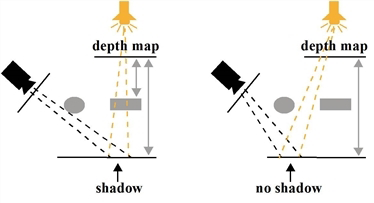
• PrmanRender 通过光线跟踪创建阴影。 它为每个像素从相机向场景发射单独的光线。当光线击中场景中的曲面时，PrmanRender 会在交点与场景中的每个光源之间跟踪所谓的阴影光线。如果交点和光源之间有障碍物，交点被认为是在阴影中。
光线跟踪的优点是，它可以用来创建更精确的阴影和具有柔和边缘的阴影，就像现实世界中的阴影一样。然而，与使用深度贴图创建阴影相比，光线跟踪可能需要更长的时间来渲染。
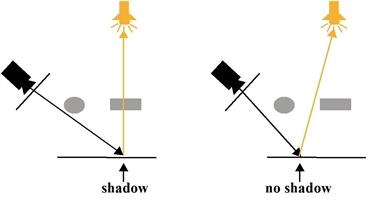
| 1。 | 打开场景中 3D 对象的 “属性” 面板。 |
| 2. | 检查 投影 或 接收阴影 盒子，或两者兼而有之。 |
投影 告诉灯光路径中的对象将阴影投射到场景中的其他对象上。
接收阴影 告诉对象显示场景中其他对象投射的阴影。这对于显示场景中的遮挡非常有用。
也可以使用场景节点为连接到它的所有三维对象定义这些设置。在场景属性中，设置 影子 到 覆盖输入 并使用 投影 和 接收阴影 控件以覆盖单个三维对象上的相应控件。
| 3. | 确保您有一个着色器节点连接到任何要接收阴影的 3D 对象。 |
| 4. | 将灯光附加到场景中，并检查 铸造 阴影 上的框 阴影 标签。 |
在下面的示例节点树中，我们使用的是 ScanlineRender 节点，但您可以使用 PrmanRender 节点。
注意: 如果使用点光源，ScanlineRender 节点中不支持投射阴影。
| 5. | 根据您正在使用的渲染节点，继续执行以下操作之一: |
• 使用 ScanlineRender 时调整阴影 下面，或
| 1。 | 在 阴影 灯光节点属性的选项卡，设置 阴影模式 至: |
• 固体 从投射阴影的光线中看到的物体被认为是完全实心的。
• 夹子 alpha -如果对象的 alpha 低于灯光的剪裁阈值控制，则投射阴影的对象被认为是透明的。所有其他 alpha 值完全遮挡灯光。
• 全阿尔法 -阴影是根据光线通过非不透明封堵器时的减少程度来计算的。
这将影响基于对象不透明度的对象投射的阴影。
|
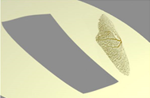 |
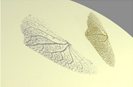 |
|
固体。(阴影是
矩形，因为 叶图像应用于 一个卡片对象。 |
夹子阿尔法。 |
|
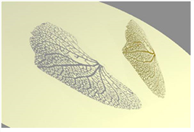 |
| 全阿尔法。 |
| 2. | 如果希望灯光节点输出阴影贴图，请设置 输出 面具 到你想存储这个的频道。您可以启用此功能，即使 投射阴影 已禁用。 |
| 3. | 如果你设置 阴影模式 到 固体 或 夹子 alpha ,您可以调整以下内容: |
• 深度图分辨率 -这将设置深度图的分辨率。较大的值会导致阴影的边缘不那么脆，伪影也较少，但需要更多的时间来处理。
|
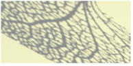 |
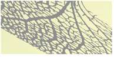 |
|
深度图分辨率
设置
到 800。 |
深度图分辨率
设置
到 7400。 |
请注意，您还可以通过增加 样品 而不是增加深度图分辨率。
• 样品 -这将设置生成软阴影时灯光的采样数。如果场景中的软阴影显示为圆点或嘈杂，请尝试增加此值。值越高，阴影就越平滑。
|
|
|
| 样品 设置为 1。 | 样品 设置为 50。 |
• 抖动刻度 -对软阴影进行百分比逼近过滤 (PCF) 时使用的抖动量。一个更大的 抖动刻度 值导致更柔和、更准确的阴影。
PCF 通过在同一地点周围的许多不同位置采样深度图来工作。该光点的最终阴影值是从光线角度遮挡或可见的样本数的平均值。
• 偏见 -这是一个恒定的偏移，将表面采样点从表面移向投射阴影的光。如果图像中出现自阴影对象，您可能需要增加此值。然而，请注意，如果您将值增加得太多，一些阴影可能会开始从投射它们的对象的底部移开。
|
|
|
| 影子文物。 |
增加
偏见
可以帮助
减少文物。 |
• 坡度偏差 -这就像 偏见 ,但偏移与深度贴图的斜率成比例。这允许您根据曲面相对于光源的坡度，为深度贴图中的每个值提供不同的偏移。例如，如果曲面相对于灯光的坡度较浅，则深度贴图中的值可能是正确的近似值，并且不需要偏移 (或仅需要非常小的偏移)。如果曲面相对于灯光的坡度陡峭，则深度贴图中的值不太可能是正确的近似值，并且需要更大的偏移。
如果增加 偏见 减少了现有的自阴影文物，但在图像的其他区域引入了更多的文物，您可能需要 偏见 下降一点，增加 坡度偏差 相反。然后，调整两个值，直到你对结果满意。
在 夹子 alpha 模式，您也可以调整:
• 过滤器 -要使用的过滤器类型。有关可用过滤算法的更多信息，请参见 选择过滤算法 .
• 裁剪阈值 -任何 alpha 值低于该阈值的表面样本都被视为透明。值越高，投射阴影的对象上被视为透明并通过一些光线的区域就越多。
|
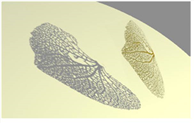 |
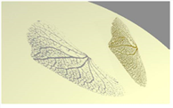 |
| 裁剪阈值 设置为 0.1。 | 裁剪阈值 设置为 0.9。 |
| 4. | 如果你设置 阴影模式 到 全阿尔法 ,您可以调整以下内容: |
• filter - the type of filter to use. For more information on the available filtering algorithms, see Choosing a Filtering Algorithm .
• 场景 epsilon -将采样点从几何曲面移向投射阴影的灯光的偏移。增加此值可以减少自阴影瑕疵。
提示: 要从直射灯光生成精确的阴影，请通过灯光 (使用观众的相机下拉菜单) 查看场景，并调整直射灯光的 规模 控件，以便场景中应该投射阴影的部分适合视图。这确保了深度贴图不会遗漏任何阴影投射几何体。
| 1。 | 打开 PrmanRender 属性并确保 阴影 已启用。 |
| 2. | 打开灯光节点属性，然后转到 阴影 标签。 |
| 3. | 确保 阴影模式 设置为 固体 。使用 PrmanRender 时，其他两种模式不相关。 |
| 4. | 如果你想从光线中投射柔和的阴影，增加 样品 宽度 。该值将阴影周围软区域的宽度相乘。值越高，软区域越大。 |
|
|
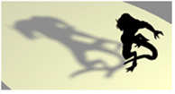 |
| 样本宽度 设置为 1。 | 样本宽度 设置为 15。 |
| 5. | 如果你增加 样本宽度 在上一步中，场景中产生的软阴影显示为多蒂或嘈杂，请增加 样品 。这将设置生成软阴影时灯光的采样数。该值越高，软阴影就越平滑。 |
|
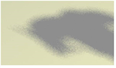 |
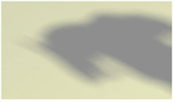 |
| 样品 设置为 10。 | 样品 设置为 80。 |
| 6. | 如果图像中出现自阴影瑕疵，请增加 偏见 价值。这将使曲面采样点远离曲面。然而，请注意，如果您将值增加得太多，一些阴影可能会开始从投射它们的对象的底部移开。 |
|
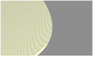 |
|
| 影子文物。 |
增加
偏见
可以帮助
减少文物。 |
|
|